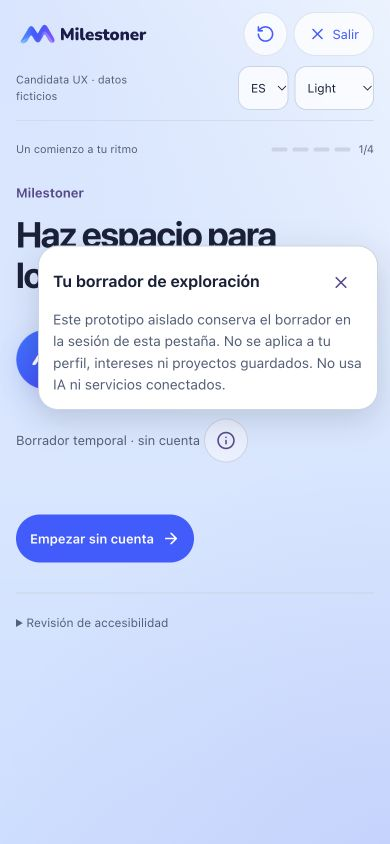
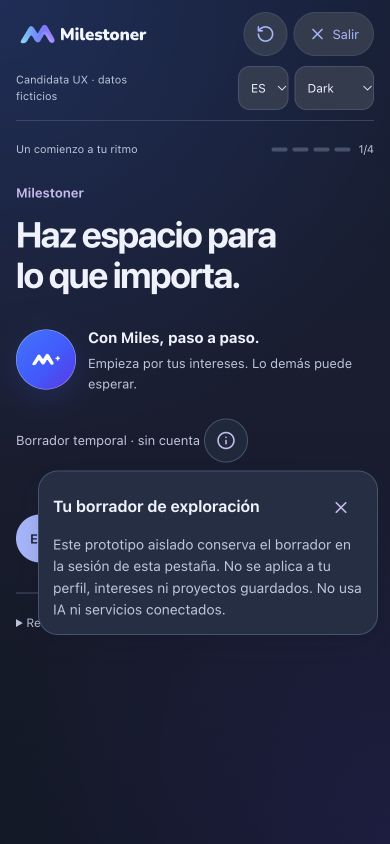
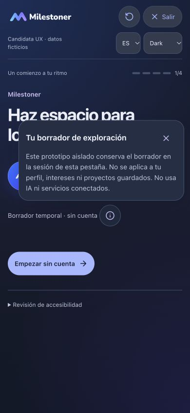
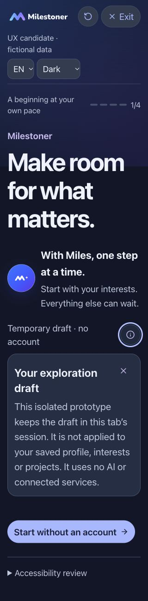

PENDING OWNER VISUAL AND FUNCTIONAL REVIEW. Ajuste de Welcome: la ayuda deja libre la acción principal. Se conservan el contenido, los tres alcances de demo y sus advertencias.
Antes: baseline a3aa9c3, capturada del preview antes de editar. Cada par usa 390×844, ES, el mismo estado sin nombre ni intereses y la información abierta. Las capturas son reales; no se han compuesto ni retocado.
El panel prefiere una posición conectada por encima del icono, completamente dentro del viewport y sin tocar el CTA. Si no cabe limpiamente por encima o por debajo, la explicación se expande en el flujo de la página. En ese caso, la acción queda después de la explicación y se alcanza con scroll normal o Tab. Abrir la ayuda no desplaza la página.



Página completa con la ayuda en línea: la explicación ocupa espacio propio y la acción sigue debajo. El mismo patrón se usa con texto ampliado cuando no existe una posición flotante limpia. Los enlaces retoman el borrador de la pestaña y no reinician tus datos.

Se mantienen Enter/Espacio, Escape, cierre exterior, retorno de foco y las etiquetas accesibles. La alternativa en línea conserva el foco inicial en el icono, como una divulgación expandible. Account, Discover y Miles conservan su popover nativo; M+ mantiene Balanced78 y la protección de descarte. No hay cambios de rutas, modelos, registros, autenticación, Sync ni iOS. V2.6.1c no se ha iniciado.